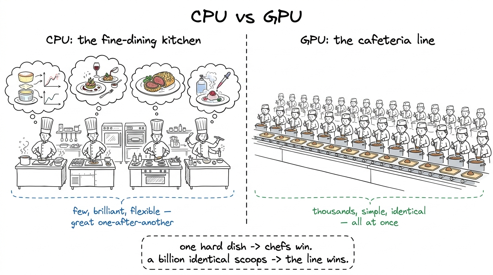
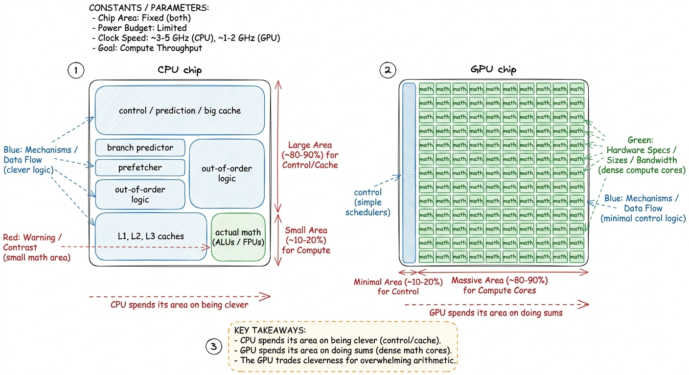
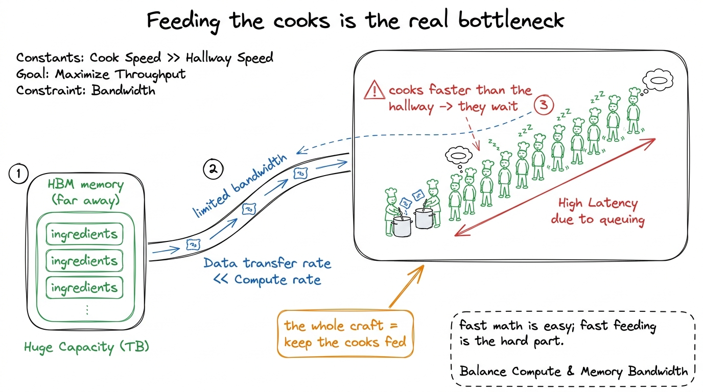

CPU vs GPU: the chef and the cafeteria
By the end of this chapter you'll be able to answer, at a whiteboard and without hand-waving, the question every student silently has on day one: what actually is a GPU, and why is it good at AI? You don't need any electronics knowledge to teach this well. You need one very good metaphor, one honest number, and the discipline to not over-complicate it. Let's build it.
The one-sentence answer
A CPU (the normal processor in your laptop) is a handful of extremely clever workers who can do complicated things quickly, one after another. A GPU is thousands of simpler workers who each do a small, dull task, but all at the same time. For most everyday computing, the clever few win. For AI — where the same simple sum has to be done a billion times — the thousands win, overwhelmingly.

figure rendering · The core metaphor: a CPU is a few master chefs; a GPU is a thousand-stThe trade the GPU makes
The GPU didn't get thousands of workers for free. It made a trade. To fit thousands of cooks on one chip, each cook has to be small and simple — less "scratchpad" space to think, no fancy tricks for guessing what to do next. The CPU spends most of its chip area on being clever (predicting, reordering, big caches). The GPU spends almost all of its chip area on raw arithmetic — rows and rows of tiny calculators.

figure rendering · The trade, drawn as chip real estate: the CPU spends silicon on cleverThis is the deep idea, and it's worth saying plainly to students: the GPU is not smarter than the CPU. It is more numerous, and AI happens to be a problem where numerous beats smart.
Why AI in particular loves this
Recall from the matrix-multiply chapter that pushing data through a neural network is, at bottom, a mountain of identical multiply-adds. There's no cleverness required for any single one of them — just a × b + c, over and over, billions of times. That is exactly the cafeteria's kind of job: the same trivial action, needed at enormous scale, with no improvisation.
The honest catch: feeding the cooks
Here's the tension you'll return to for the entire workshop, so introduce it gently now. A thousand cooks can only work as fast as the ingredients arrive. If the pantry is far away and the hallway is narrow, your thousand cooks spend most of their time waiting for rice, not scooping it. A GPU has the same problem: its thousands of calculators are so fast that the real struggle is shoveling data to them quickly enough.

figure rendering · The catch that motivates the whole course: the cooks are faster than tThe production link
Frame the stakes so students know this isn't a toy. The reason companies buy racks of H100 and B200 GPUs — spending hundreds of thousands of dollars each — is precisely this cafeteria bargain: for the massively-repetitive math of AI, one GPU replaces a warehouse of CPUs. And the reason kernel engineers are paid so well is the catch: those expensive cooks sit idle unless someone writes the code that keeps them fed. A model served on a poorly-fed GPU might use 10% of the hardware you paid for; a well-fed one, 90%. That gap — nine-tenths of a multi-million-dollar cluster — is what your students learn to close.
That's the chapter. Two kitchens, one trade, and one catch. If a student leaves able to explain why numerous beats smart for AI and why feeding the cooks is the real problem, you have given them the mental spine for everything that follows.
You can now teach
- The CPU-vs-GPU difference as fine-dining chefs vs. a cafeteria line — few-and-clever vs. many-and-simple.
- The trade the GPU makes: spending its silicon on raw arithmetic instead of cleverness — "not smarter, more numerous."
- Why AI fits the GPU so perfectly: the network's core work is the same trivial multiply-add at enormous scale.
- Why GPUs don't win at everyday, branchy computing (answer the "why not use them for everything?" question).
- The catch that sets up the whole course: a GPU is limited by how fast it's fed, not how fast it computes.
- The production stakes: keeping the cooks fed is worth a fortune, and it's exactly what kernel engineers are paid to do.